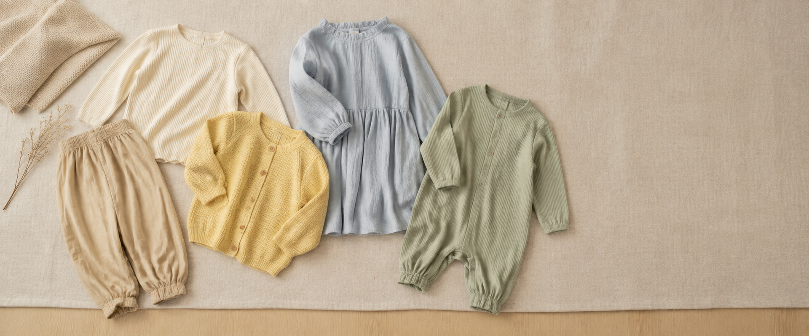
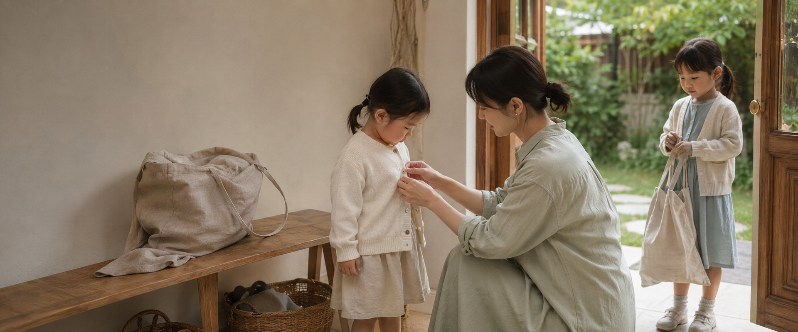

LITTLE DAYS, SOFTLY WORN.
멜로위는 아이가 오랜 시간 편안하게 입고, 부담 없이 선택할 수 있는 옷을 만듭니다.
특별한 날뿐 아니라 평범한 하루에도 자연스럽게 스며들며, 시간이 지나도 따뜻한 기억으로 남을 수 있는 옷을 제안합니다.
👕 아이가 오랜 시간 입어도 불편하지 않고, 보호자가 일상에서 부담 없이 선택할 수 있는 옷을 제안합니다.
아이들의 움직임을 제한하지 않는 여유로운 핏과 피부에 부드럽게 닿는 소재를 중심으로 제품을 구성합니다. 활동성과 편안함을 기본으로 하면서도 외출복과 일상복의 경계를 자연스럽게 연결하는 단정한 디자인을 추구합니다.

🧸 아이들의 맑고 사랑스러운 모습을 은은하게 돋보이게 합니다.
멜로위의 색상은 자연스럽게 어우러지는 베이지, 크림, 버터 옐로우, 소프트 블루, 세이지 그린을 중심으로 구성됩니다. 각각의 옷을 자유롭게 조합해도 조화로운 스타일이 완성될 수 있도록 차분하고 부드러운 색의 균형을 중요하게 생각합니다.

🌙 아이와 가족의 일상에 자연스럽게 스며드는 키즈웨어를 만들어갑니다.
빠르게 지나가는 유행보다 아이들의 매일에 오래 머물 수 있는 옷, 특별한 날뿐 아니라 평범한 하루에도 편안하게 입을 수 있는 옷. 멜로위는 아이와 가족의 소중한 일상을 부드럽고 따뜻하게 이어갑니다.